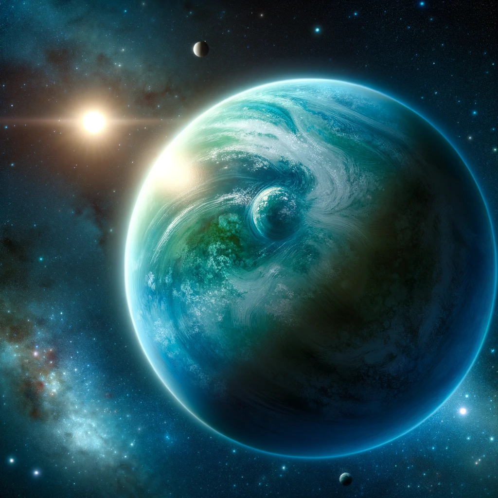

Exoplanètes : À la Découverte de Nouveaux Mondes
Les exoplanètes, des planètes orbitant autour d'étoiles autres que notre Soleil, offrent des fenêtres fascinantes sur la diversité des systèmes planétaires de notre galaxie. Ces mondes lointains, allant des géantes gazeuses aux planètes rocheuses, élargissent notre compréhension de la formation et de l'évolution des systèmes planétaires, y compris le nôtre.
Cet article explore les méthodes de détection des exoplanètes, les découvertes majeures à ce jour, et l'importance de ces découvertes pour la recherche de la vie extraterrestre. Nous discutons également de l'avenir de l'exploration des exoplanètes et de la quête pour trouver une autre Terre.
De la méthode des vitesses radiales à la méthode des transits, la science des exoplanètes est un domaine en rapide évolution qui promet de révéler encore plus de secrets sur notre place dans l'univers.